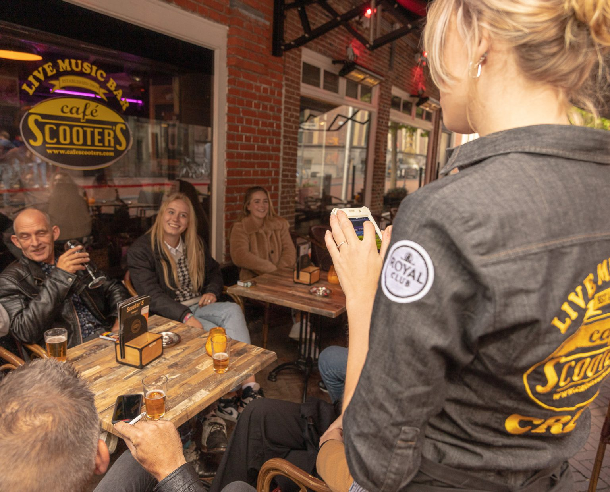
Ruiterskwartier 61 & 63, Leeuwarden. Sinds 2004.
Het muziekcafé van Leeuwarden
Een gezellig ingericht bruin café met goede muziek. Vanaf vier uur 's middags de gezelligheid van een huiskamer, 's avonds quiz, karaoke en live bands.
Elke week hetzelfde feestje
Bekend staat Scooter'S om de Pub Quiz op woensdag, de Karaoke op donderdag en de live muziek op vrijdag en zaterdag, uit binnen- en buitenland.
-
Woensdag20.00 uur
Pub Quiz Night
Acht rondes met vragen, een fotoronde met beroemdheden, dieren, gebouwen, posters en vlaggen, en als hoogtepunt de muziekronde: tien fragmenten raden via clip en geluid.
Reserveer voor de quiz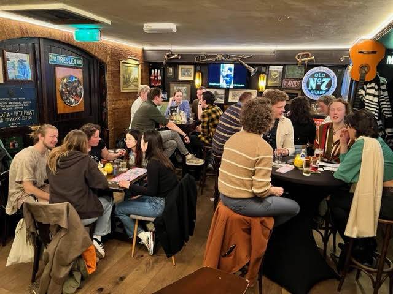
-
Donderdag19.00 uur
Scooter'S Karaoke Show
De legendarische karaokeavond. Lachen, gieren en brullen, met zang, dans en theater op het podium. Dit moet je meemaken om het te kunnen begrijpen.
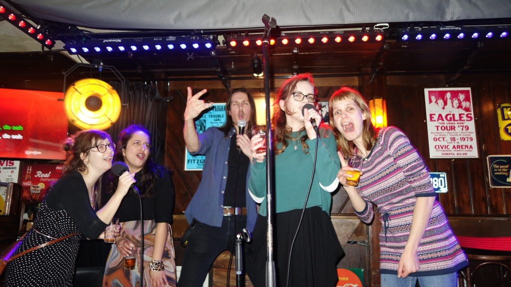
-
Vrijdag21.00 tot 01.00
Live: eigen werk en themabands
Op vrijdagavond staan er bands met eigen werk of themagerichte bands op het podium. Daarna afterparty: danscafé met verzoekjes tot laat.
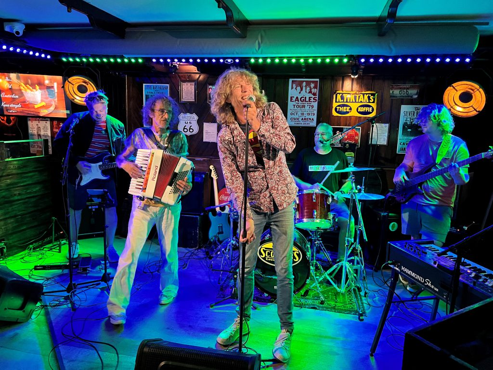
-
Zaterdag21.00 tot 01.00
Live: de coverband
Op zaterdag staat er een coverband. Sinds 2004 vonden vele artiesten uit binnen- en buitenland de weg naar het Scooter'S podium. Ook hierna: afterparty met verzoekjes.
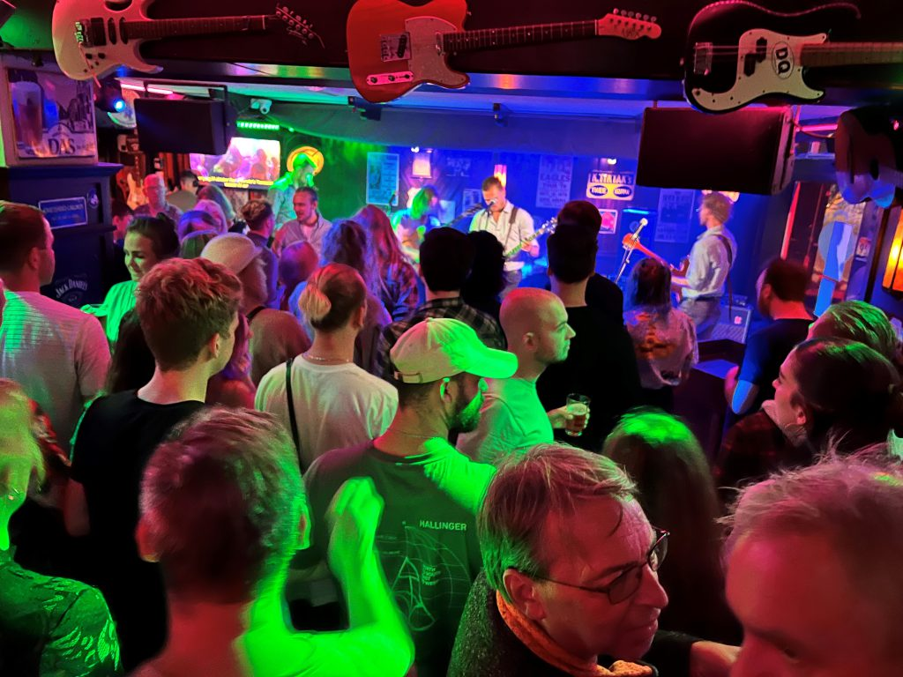
Binnenkort op het podium
Standaard elke woensdag Pub Quiz en elke donderdag Karaoke. Vrijdag en zaterdag live muziek, daarna danscafé met verzoekjes.
- Pub Quiz NightWoensdag, 20.00
- KaraokeDonderdag, 19.00
- Bohemian Royalty playing QueenLive muziek, 21.00
- De Rinaldo'sLive muziek, 21.00
- Pub Quiz NightWoensdag, 20.00
- KaraokeDonderdag, 19.00
- Sinterband night met Slatt & The Wildwood FlowersLive muziek, 21.00
- DiQuapoLive muziek, 21.00
- Pub Quiz NightWoensdag, 20.00
- KaraokeDonderdag, 19.00
- Andrea De Luca band (Italy)Live muziek, 21.00
- MoonsharkLive muziek, 21.00
- Pub Quiz NightWoensdag, 20.00
- KaraokeDonderdag, 19.00
- Rick OnijdesLive muziek, 21.00
- 80's ManiacsLive muziek, 21.00
- Pub Quiz NightWoensdag, 20.00
- Kerstavond Karaoke ShowKaraoke, 19.00
- 1e kerstdag zijn we geslotenGesloten
- 2e Kerstdag Karaoke ShowKaraoke, 21.00
- Jaaroverzicht Quiz 2026Pub quiz, 20.00
- Oudjaarmiddag met "Bruno"Oudjaarsdag, 14.00
- 7LiveLive muziek, 21.00
- Pub Quiz NightWoensdag, 20.00
- Karaoke elke donderdagKaraoke, 19.00
- Nieuwjaarsborrel JamsessieJamsessie, 21.00
- LecheryLive muziek, 21.00
- Danny D and the Hot Billies (Italië)Live muziek, 21.00
- GreymenLive muziek, 21.00
- Elevated MenLive muziek, 21.00
- Oerrock Play OffsLive muziek, 21.00
- Don Diego Trio (Italië)Live muziek, 21.00
- HopperLive muziek, 21.00
- Frisian Funk FoundationLive muziek, 21.00
- Room 2 RoamLive muziek, 21.00
- The Southern Blues Society (Italië)Live muziek, 21.00
- 23 jaar Scooter'S met OverinflatLive muziek
De nieuwe agenda volgt binnenkort. Woensdag quiz, donderdag karaoke en vrijdag en zaterdag live muziek gaan gewoon door.
In deze voorbeeldsite staat de agenda zoals die nu op cafescooters.com staat. Voorbije data verdwijnen vanzelf.
Bites & More
Sinds de opening van de Pathé bioscoop tegenover ons hebben we een kleine kaart met hapjes. Keuken van woensdag tot en met zondag, vanaf 16.00 uur.
Warm
Koud
* Te bestellen tot 21.30 uur. Prijzen in euro's.
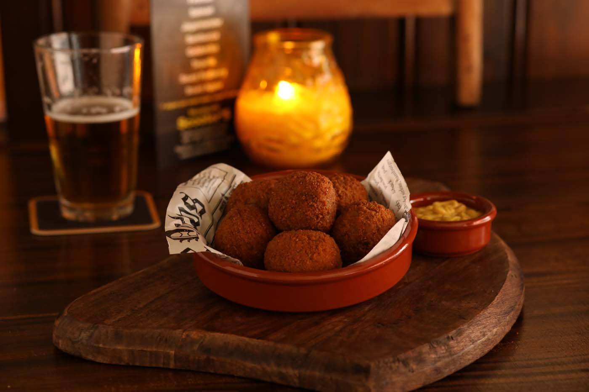
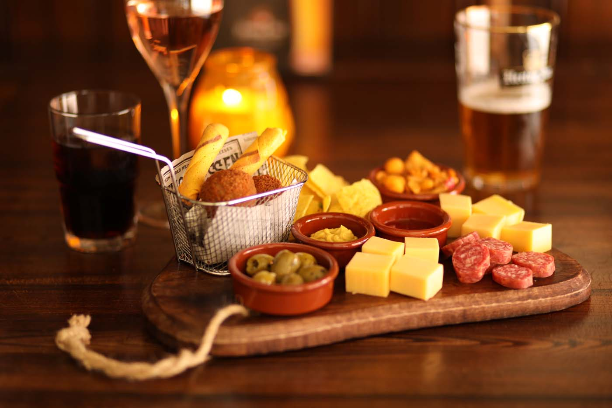
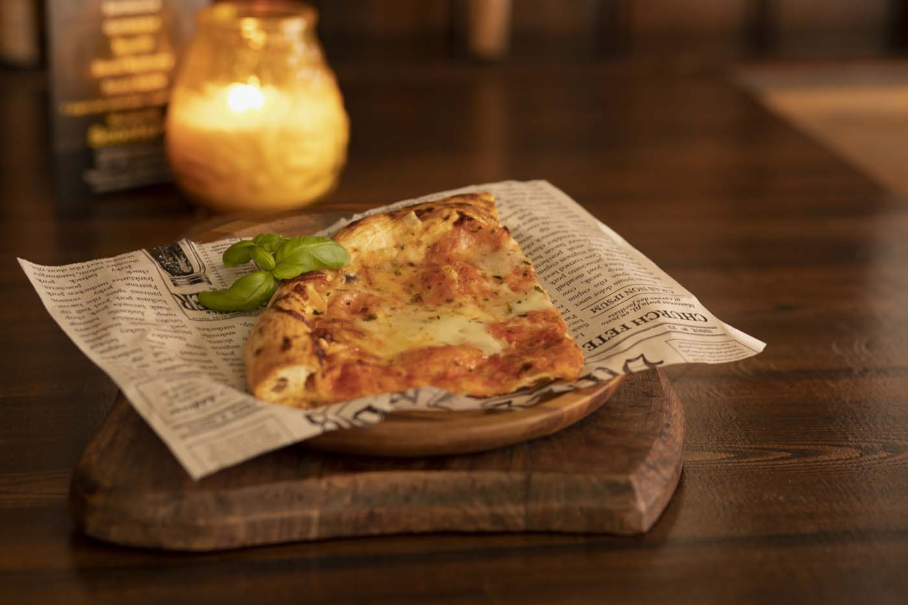
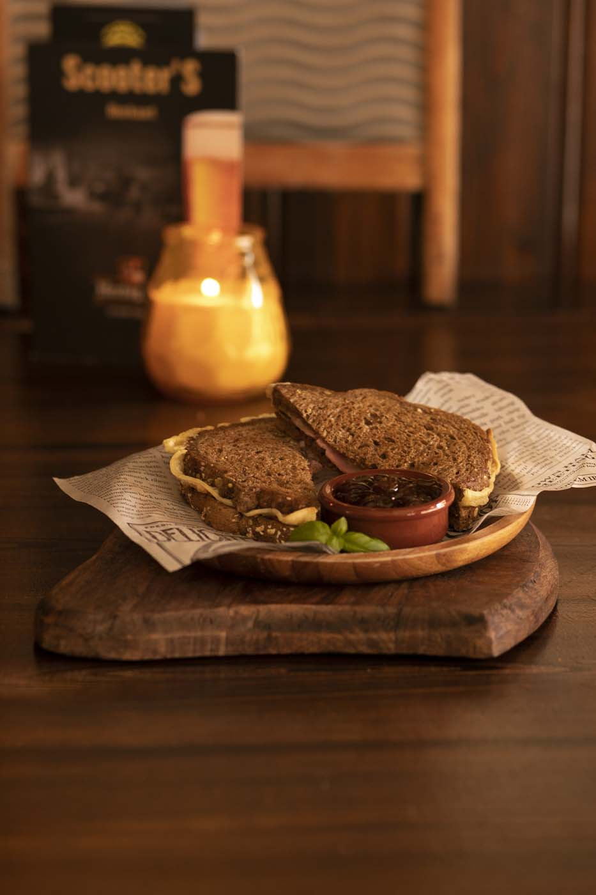
Bruin café met goede muziek
Geopend in 2004 en uitgegroeid tot het muziekcafé van Leeuwarden. Gewoon een gezellig ingericht bruin café met goede muziek: van pop en rock tot disco en soul, oude en nieuwe hits en videoclips op de vele beeldschermen.
Het terras
Op ons terras zijn 40 zitplaatsen. Je zit er heerlijk onder een zonnescherm en verwarmd, en kijkt wie er naar de bioscoop gaat of langsloopt naar stadsschouwburg De Harmonie en poppodium Neushoorn.
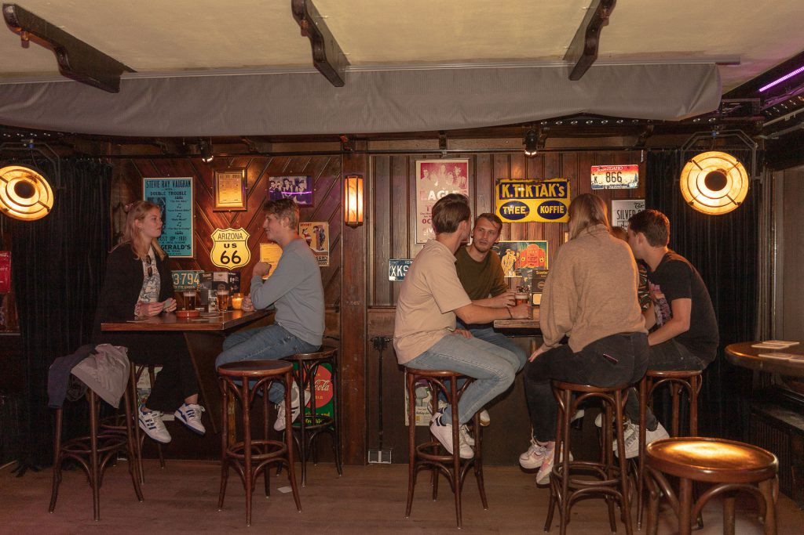
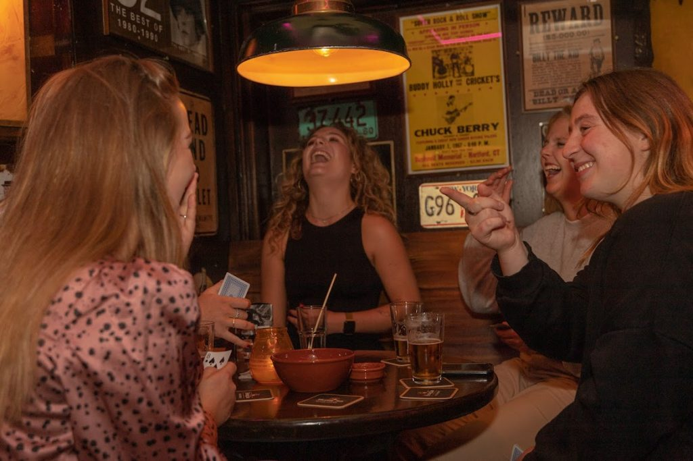
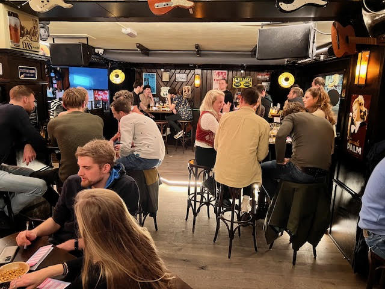
Kom langs
Café Scooter'SRuiterskwartier 61 & 63
8911 BR Leeuwarden
058 216 26 66
info@cafescooters.com
Tegenover Pathé, naast De Harmonie en Neushoorn.
Openingstijden
| Maandag | Gesloten |
|---|---|
| Dinsdag | Gesloten |
| Woensdag | 16.00 tot 01.00 |
| Donderdag | 16.00 tot 03.00 |
| Vrijdag | 16.00 tot 03.00 |
| Zaterdag | 16.00 tot 03.00 |
| Zondag | 16.00 tot 00.00 |